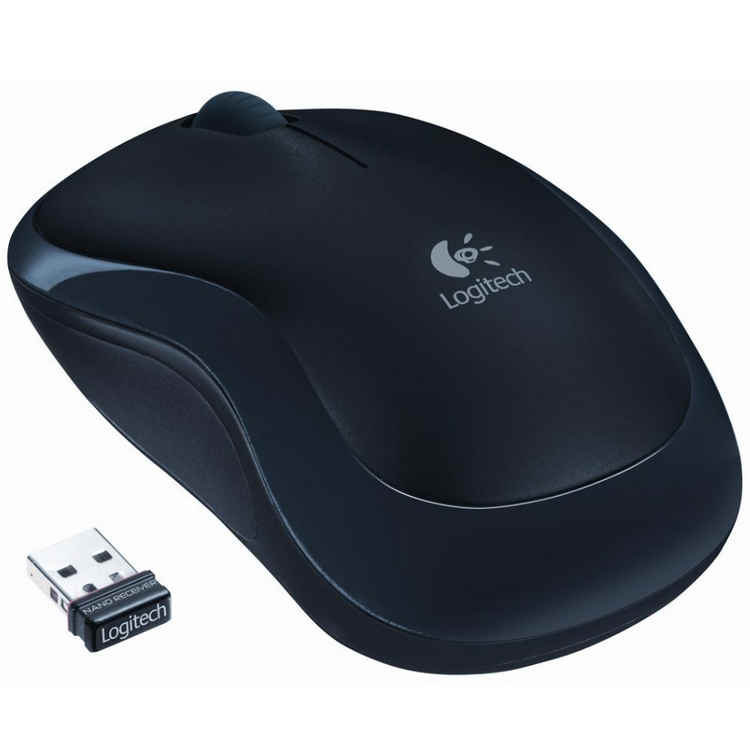

Ratón
Precio 14,95€
Logitech® Wireless Mouse M175. Ratón sencillo y fiable con Plug and Play inalámbrico. La comodidad y la libertad de un dispositivo inalámbrico con la fiabilidad de uno con cable: transmisión de datos rapidísima sin apenas retrasos ni interrupciones. El año de duración de las pilas supone menos complicaciones.* Obtendrá la calidad y fiabilidad que han hecho de Logitech el líder mundial en ratones, con tres años de garantía. El minúsculo nano receptor funciona al instante sin software y es tan pequeño que permanece en el puerto USB, y así no se pierde. Y por si fuera poco, este ratón cómodo y contorneado es delicado con la mano. * La duración de la pila depende del uso y del ordenador.